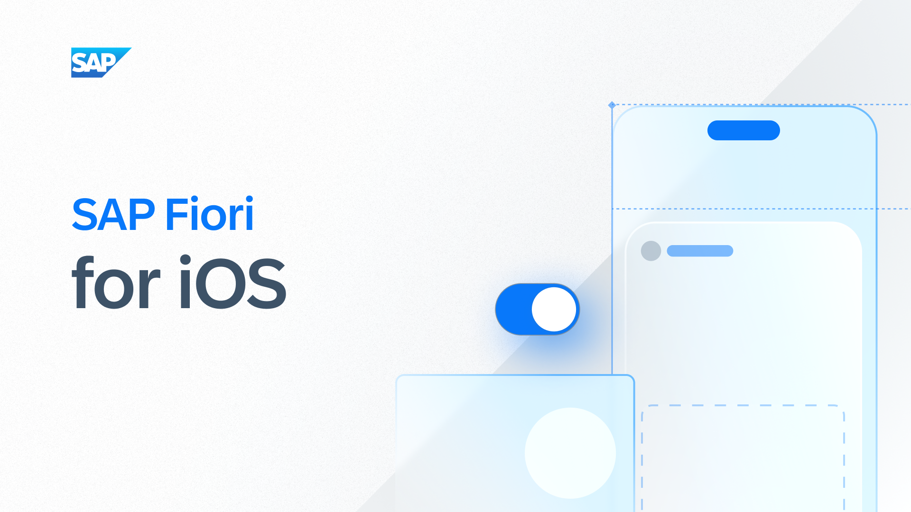
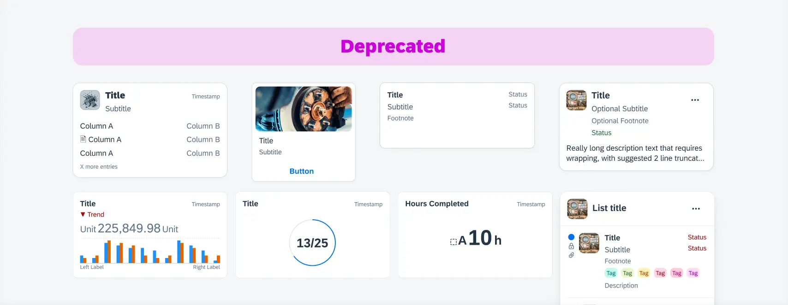
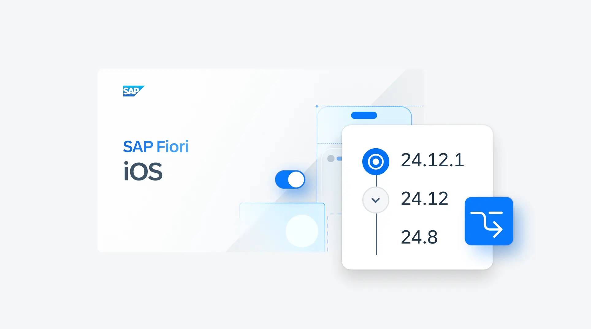

This case study is password protected. Enter the password to continue.
Measured ImpactMixed MethodsWorkshop Facilitation
01 · SAP Fiori Mobile Design System · Aug–Sep 2025 · 8 weeks
A working design system nobody trusted.
I pushed for this study before I had data to justify it. 600 internal designers were quietly building custom alternatives instead of using the system. The team's read was a training problem. Mine was different: when that many people independently make the same workaround, the system has a structural failure, not a communication one. I challenged the framing before the roadmap was locked.

My Role
Lead and sole researcher. Scoped, recruited and ran all 19 sessions. Designed the benchmark survey, facilitated the prioritization workshop and drove 3 changes shipped in v25.04.
+12.6% satisfaction in one quarter (3.71 to 4.18, n=160). Three structural changes shipped in v25.04. ~8 weeks of engineering rework prevented. Android and iOS leads aligned on a shared problem definition for the first time.
Context: Challenging the Assumption
600+ internal designers depended on Fiori Mobile. Satisfaction had dropped to 3.71/5 and teams were quietly detaching from components. The team's interpretation: designers weren't following the system correctly. Invest in quality and adoption would return. I proposed a mixed-methods study before the roadmap was locked.
At stake
The team had scoped a quality improvement sprint for the next cycle. If the problem was structural rather than behavioral, that investment would not move adoption at all.
Study participants: 19 total, across both platforms and roles
12
Designers (iOS and Android)
7
Developers working with Fiori Mobile
2
Phases: interviews first to surface mechanism, survey second to measure prevalence
160
Benchmark survey participants (pre/post)
Team's assumption
"Designers are not following the system correctly. Improve component quality and adoption will return."
→
My research question
"Why do designers feel unsafe depending on this system? Which structural conditions are making it faster to abandon it than to use it?"
Research Program
I chose mixed methods because the problem had two unknowns: what was driving abandonment behavior and whether it was systemic or isolated. Interviews first to surface the mechanism, survey second to measure whether the specific trust failures were widespread or edge cases. I expanded recruitment to include 7 developers alongside 12 designers. Developer pain points had been invisible in prior design system work. That turned out to be where the clearest structural evidence was.
Phase 1: Moderated interviews (n=19)
1-hour sessions combining think-aloud workflow observation with structured feedback on specific components
Designers and developers interviewed separately to surface role-specific pain before identifying shared patterns
Phase 2: Benchmark survey (n=160, pre/post)
Constructs derived directly from interview findings: perceived reliability, standards clarity, customization confidence and accessibility trust
Same 160 respondents completed both pre-launch and post-launch waves, enabling a direct within-cohort comparison
Pre-launch baseline: 3.71/5 · Post-launch: 4.18/5
Key Findings: The Cycle of Abandonment
Synthesized through affinity mapping in Dovetail across all 19 sessions. Three structural failures emerged that weren't independent. They compounded into a self-reinforcing loop.
SAP Fiori guidelines contradicted Apple HIG and Material Design in unresolved ways. Designers spent significant time cross-checking three sets of rules for every component decision. They were not abandoning the system because they did not care about consistency. They were abandoning it because the system could not tell them what correct looked like.
2
Rigid components created a debt spiral no team could exit
Any customization required detaching from the component. Detaching meant losing future updates. Losing updates meant building custom alternatives. Custom alternatives compounded with every release. The system's inflexibility was directly generating the abandonment it suffered from.
3
Accessibility anxiety produced worse accessibility outcomes
Developers could not verify WCAG compliance within the system, so they built custom components they believed were safer. I did not expect what came next: those builds were objectively less accessible than the system defaults they had avoided. Unverifiable risk produced worse outcomes than the risk itself.
Designer persona developed from interview synthesis: Rachel represents the core pattern across all 19 sessions. In the prioritization workshop, she became the team's decision filter. When the Android and iOS leads disagreed on which structural change to tackle first, anchoring the debate to Rachel's specific friction points moved the conversation from opinion to evidence. Three changes were scoped in one session.
"Sometimes I spend more time figuring out which component to use than actually designing."
Internal designer, live workflow observation
Building Buy-in: The Journey Mapping Workshop
The decision
A standard readout would have been easy to debate. I needed the design system team to own the problem, not just hear about it. I facilitated a journey mapping workshop where Android and iOS leads worked directly with raw session data, real quotes and behavioral observations, rather than researcher summaries. Co-ownership of the synthesis meant co-ownership of what to fix.
The resistance
The iOS lead read the detachment data as a training gap: designers not reading the documentation carefully enough. Rather than argue the point, I put timestamped session clips in front of the group: designers finding the right component, then detaching anyway. Not from ignorance, but because following the rules produced an unusable result. By the end of the workshop, the lead was co-authoring the problem statement. The shift happened because the data made the argument, not me.
Workshop attended by Android and iOS design system leads and key team members
Participants worked with real quotes and behavioral observations from the 19 sessions, not researcher summaries
Journey maps produced in the workshop became the shared artifact the team used to prioritize v25.04 changes
Framing each failure as structural rather than attributable to any individual reduced defensiveness and made action easier
As-Is Journey Map for the Fiori Mobile Design System: Synthesised from 19 designer and developer sessions. Orange phase bands mark the friction zones. Red stickies call out the specific pain points that drove detachment decisions at each stage.
Changes Shipped in v25.04
Every change in v25.04 traced directly to a structural failure the research documented. Not a designer request. Not a backlog item.
Designers cross-checked SAP, Apple HIG and Material Design for every component decision.
→
Shipped
Comparison tables with explicit divergence rationale
Documented where SAP intentionally diverges from platform guidelines and why, removing the cross-referencing burden.
Finding 2
Rigid components created a debt spiral
Any customization forced detachment and severed the update path, generating custom builds that compounded over time.
→
Shipped
Flexible variants with defined customization zones
Teams can adapt components without detaching, keeping them on the update path and breaking the debt spiral.
Finding 3
Accessibility anxiety produced worse accessibility outcomes
Developers built "safer" custom components that were objectively less accessible than the system defaults.
→
Shipped
Screen reader annotations on every component spec
Accessibility ambiguity removed at the point of decision, eliminating the risk-driven custom builds.
Scope of deliverables across the system
Design outputs driven by the research findings. Execution by the Fiori Mobile design team.
Change 2 in practice: Swap slots make customization zones explicit at the component level. Teams adapt the AI Insights component within the yellow-marked regions without detaching.Fiori Android 25.8 UI Kit changelog: Foundation updates (color, typography, spacing) and component updates across the full kit, the direct output of roadmap changes this research drove.Component update: Attachment Form Cell, redesigned upload states and error handling.AI architecture guidance: Embedded AI feature handoff spec for Module-to-Joule integration.

Deprecated components cleanup: Legacy card variants flagged and removed from the active kit to reduce decision noise.Design System Portal: AI UI elements published and discoverable, closing the self-service gap for teams.

iOS UI Kit branching: Versioned releases (24.8 → 24.12 → 24.12.1) aligned to the new update cadence, the structural change that made rollouts predictable.
Impact
Component Detachment Rate: Dropped from 28% to 11% post v25.04, a 17pp reduction across four sprints.Survey Construct Breakdown, pre/post v25.04 · n=160: All four constructs rose 21–33pp, each mapping directly to one of the three structural changes shipped.
+12.6% satisfaction in one quarter (3.71 to 4.18, same n=160 cohort pre/post) · 3 structural changes shipped in v25.04~8 weeks of engineering rework prevented across three sprint cyclesAndroid and iOS leads aligned on a shared problem definition for the first time · 2026 roadmap shaped
On ~8 weeks: Estimate based on a retrospective calculation I developed with the PM in the v25.04 planning debrief. Three structural blockers each contributed an average of 2 sprint weeks of engineering time per detachment cycle, based on observed cycles in the 6 months prior to the study. Conservative lower bound; actual value was likely higher given compounding QA and accessibility review overhead.
On the +12.6% CSAT lift: This is a within-cohort pre/post comparison (same n=160 respondents, before and after v25.04 shipped). There was no control group, so other factors active during that quarter (such as broader Fiori communication changes or onboarding updates) cannot be ruled out as contributors. The study design provides strong directional signal, not a controlled attribution. The appropriate interpretation is that structural changes coincided with a meaningful satisfaction increase in the target cohort, not that research alone caused it.
Reflection
Challenging an assumption requires giving the team a path forward
Disconfirming the quality hypothesis wasn't enough on its own. I had to make the alternative framing impossible to dismiss, which required rigorous evidence, and I had to give the team somewhere to go with it. The workshop did both. By the time we left the room, the problem definition was shared, the priorities were agreed and the leads had already started drafting the roadmap.
Expanding the brief is a judgment call, not a best practice
The team expected a designer study. I expanded it to include 7 developers without knowing whether it would justify the wider scope or longer timeline. Adding developers meant a more complex screener and no guaranteed return. It turned out the strongest structural evidence came entirely from those sessions. Designers described friction. Developers described building objectively worse components to escape it. Without those 7 sessions the third finding wouldn't exist and one of the three shipped changes wouldn't have had a case. The lesson isn't that broader scope is always better. It's that questioning who is usually left out of the room is worth the extra week. Those sessions almost didn't happen. I'm glad they did.
Study limitations
Phase 1 (n=19): Sample drawn from teams still engaging with the design system org. Teams that had fully detached and stopped reaching out may be underrepresented — their experience of structural failure may be more acute than what the sessions captured.
Phase 2 (n=160): Within-cohort pre/post design with no control group. Other factors active during the quarter cannot be ruled out as contributors to the CSAT lift. See the methodology note in the Impact section for the full framing.
Platform scope: Study focused on iOS and Android Fiori Mobile. Web Fiori teams were not included. Structural failures may manifest differently across platforms.